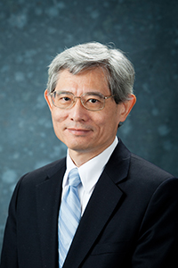

Title: TBD
Wing Shing Wong
Choh-Ming Li Professor of Information Engineering, The Chinese University of Hong Kong.
Abstract: TBD
Bio: Wing Shing Wong graduated from Yale University with a combined M.S. and B.A. degree and obtained an M.S. degree and a Ph.D. degree from Harvard University. He is an IEEE Fellow, a Fellow of the Hong Kong Institution of Engineers (FHKIE), and a Fellow of the Hong Kong Academy of Engineering Sciences (HKAES).
He joined AT&T Bell Laboratories in 1982. From 1987 to 1992 he managed a group of technical staff working on a number of research and development projects and consulting activities. He joined the Chinese University of Hong Kong in 1992 and is now a Professor of Information Engineering. He was the Chairman of the Information Engineering Department from 1995 to 2003. He served as Science Advisor at the Innovation and Technology Commission of the HKSAR government from 2003 to 2005 and was a Board Director and the Chairman of the Technical Committee of the Hong Kong Applied Science and Technology Research Institute (ASTRI) from 2006 to 2008. He has served as the Dean of the Graduate School in the Chinese University of Hong Kong since 2005.
He received more than a dozen of competitive R&D grants from several funding agencies. He had led a project on a Chinese search engine, MoLi & ANSeRS. The search engine was based on innovative ideas that have been patented in the US and China. He served as an Associate Editor of the IEEE Transactions on Automatic Control for 4 years. He has co-founded with other internationally renowned researchers an international journal, Communications in Information and Systems, and is now serving as the co-Editor-in-Chief. He was a member of the 7th Council of the Chinese Association of Automation. He is a Visiting Professor of Southeast University, Nanjing and Fujian Normal University.
Title: TBD
Jong-Seon No
Professor, Department of Electrical and Computer Engineering, Seoul National University.
Abstract: TBD
Bio: Jong-Seon No (S’80–M’88–SM’10–F’12) received the B.S. and M.S.E.E. degrees in electronics engineering from Seoul National University, Seoul, South Korea, in 1981 and 1984, respectively, and the Ph.D. degree in electrical engineering from the University of Southern California at Los Angeles, CA, USA, in 1988. He was a Senior MTS with Hughes Network Systems from 1988 to 1990. He was an Associate Professor with the Department of Electronic Engineering, Konkuk University, Seoul, from 1990 to 1999. He joined the Faculty of the Department of Electrical and Computer Engineering, Seoul National University, in 1999, where he is currently a Professor. His area of research interests includes error-correcting codes, sequences, cryptography, LDPC codes, interference alignment, and wireless communication systems. He was a recipient of the IEEE Information Theory Society Chapter of the Year Award in 2007. From 1996 to 2008, he served as the Founding Chair of the Seoul Chapter of the IEEE Information Theory Society. He was the General Chair of Sequence and Their Applications 2004, Seoul. He served as the General Co-Chair of the International Symposium on Information Theory and Its Applications 2006 and the International Symposium on Information Theory 2009, Seoul. He has been a Co-Editor-in-Chief of the IEEE JOURNAL OF COMMUNICATIONS AND NETWORKS since 2012.